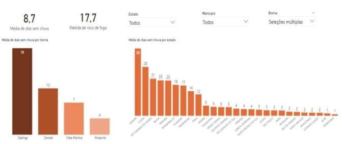
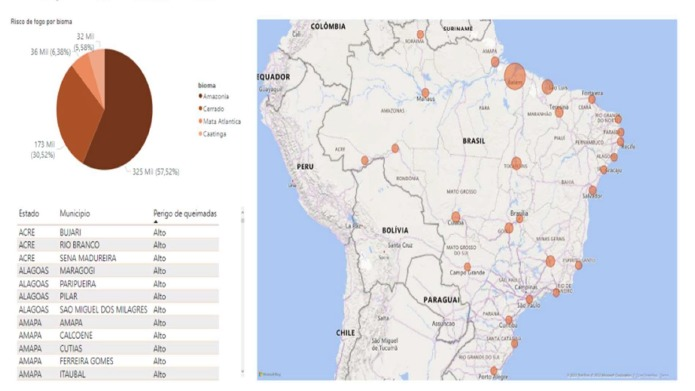

Somos uma equipe dedicada a conscientizar sobre as queimadas no Brasil. Apresentamos insights obtidos a partir da análise de dados e disponibilizamos essas informações através desse portal.
Para realizar a transformação dos dados, será utilizado o Power BI. Os dados foram importados através do site INPE (Instituto Nacional de Pesquisas Espaciais), disponível em: https://terrabrasilis.dpi.inpe.br/queimadas/bdqueimadas/.
Conforme evidenciado na imagem abaixo, realizou-se uma análise quantitativa abrangendo todo o território nacional. Examinamos os dados por meio de diversas perspectivas, incluindo biomas, cidades e estados.

